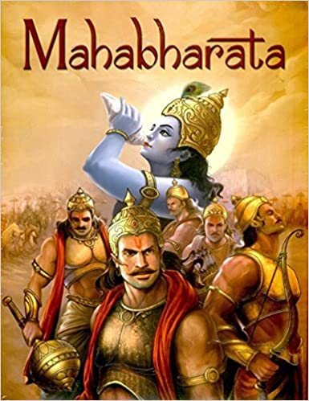

The Mahābhārata (Sanskrit: महाभारतम्), Mahābhāratam is one of the two major Sanskrit epics of ancient India, the other being the Rāmāyaṇa. It narrates the struggle between two groups of cousins in the Kurukshetra War and the fates of the Kaurava and the Pāṇḍava princes and their successors.
It also contains philosophical and devotional material, such as a discussion of the four "goals of life" or puruṣārtha (12.161). Among the principal works and stories in the Mahābhārata are the Bhagavad Gita, the story of Damayanti, an abbreviated version of the Rāmāyaṇa, and the story of Ṛṣyasringa, often considered as works in their own right.
Traditionally, the authorship of the Mahābhārata is attributed to Vyāsa. There have been many attempts to unravel its historical growth and compositional layers. The bulk of the Mahābhārata was probably compiled between the 3rd century BCE and the 3rd century CE, with the oldest preserved parts not much older than around 400 BCE. The original events related by the epic probably fall between the 9th and 8th centuries BCE. The text probably reached its final form by the early Gupta period (c. 4th century CE)
The Mahābhārata is the longest epic poem known and has been described as "the longest poem ever written". Its longest version consists of over 100,000 śloka or over 200,000 individual verse lines (each shloka is a couplet), and long prose passages. At about 1.8 million words in total, the Mahābhārata is roughly ten times the length of the Iliad and the Odyssey combined, or about four times the length of the Rāmāyaṇa. W. J. Johnson has compared the importance of the Mahābhārata in the context of world civilization to that of the Bible, the works of William Shakespeare, the works of Homer, Greek drama, or the Quran. Within the Indian tradition it is sometimes called the fifth Veda.
The epic is traditionally ascribed to the sage Vyāsa, who is also a major character in the epic. Vyāsa described it as being itihāsa (Sanskrit: इतिहास, meaning "history"). He also describes the Guru-shishya parampara, which traces all great teachers and their students of the Vedic times.
The first section of the Mahābhārata states that it was Ganesha who wrote down the text to Vyasa's dictation.
You may get to know more Here
credits: wikipedia